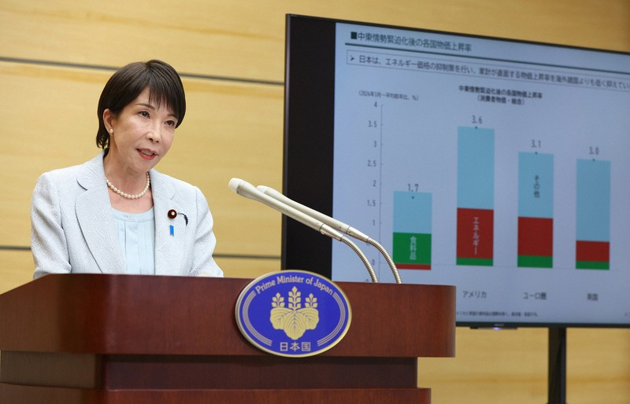
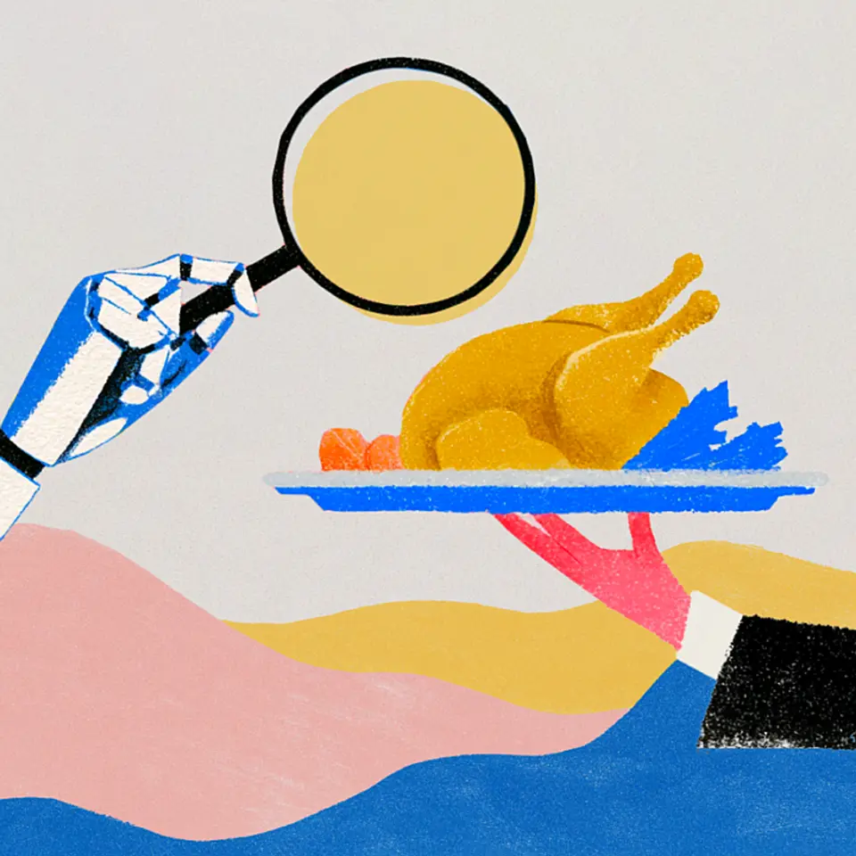

01政府、ガソリン補助金を段階的縮小 12月から毎月5円ずつ
| NewsPicks原文

あなたに関係ありそうな理由
燃料補助の縮小は移動費や物流費に関わります。補助の仕組みと光熱費支援を分けて見ると、家計や事業コストへの影響を考えやすくなります。
概要
高市早苗首相は10月29日、ガソリンなど燃料油の価格上昇を抑える補助金を、12月から段階的に縮小する方針を示した。春先に向けて、補助の基準となる価格を毎月1リットル当たり5円ずつ引き上げる。補助金を一度に終えるのではなく、段階を設ける設計だが、いつ終了するかは明らかにしていない。基準価格の変更は、補助の水準を調整する政策上の目安であり、店頭価格が毎月必ず5円上がると決まったわけではない。原油価格や為替、流通段階の価格も関わるため、補助の変化と実際の給油価格は分けて見る必要がある。
燃料価格への補助は2022年1月に始まり、これまでの累計支出は約9兆6000億円に達した。記事が伝える直近の補助額は1リットル当たり52円40銭。燃料価格が高騰した局面で急な負担増を抑える役割を担ってきた一方、価格を支えるために大きな公費が使われている。今回の変更は支援を続けながら縮める方針で、政府は急な価格上昇を避ける考えを示す。終了時期が未定のため、支出総額が今後どこまで膨らむかも現段階では見通せない。
同じ12月から翌年2月までは、電気・ガス料金にも支援を行い、標準的な世帯で約7000円の負担軽減を見込む。燃料油の補助縮小と、電気・ガス料金の支援は別の制度として動く。家計の支出を考える際も、ガソリン代だけを比べず、暖房を使う季節の光熱費支援を合わせて確認する必要がある。企業にとっても、車両や配送にかかる燃料費と、事業所の電気・ガス料金では影響を受ける時期や大きさが異なる。
表示コメントでは、物価高対策を食品の消費税減税へ移す流れと捉える意見があった一方、食品減税は議論中なのに燃料補助の縮小が先に始まる点を疑問視する声も見られた。給付付き税額控除のように、特定品目ではなく幅広い支出を支える制度へ移る可能性を挙げたコメントもある。いずれも投稿者の意見で、政府が次の制度を決めたという意味ではない。今後は、基準価格の引き上げが実際の燃料価格にどう表れるか、電気・ガス支援終了後に家計負担がどう変わるか、補助の終了時期が示されるかを追いたい。これらは投稿者の意見だが、品目ごとの価格補助から、家計全体を対象とする支援へ移すべきかという制度設計の論点も示している。
仕事や会話で使える一言
「補助の縮小幅と、実際のガソリン価格の変化を分けて確認したいですね。」
02アルファベット株が最大の下げ、時価総額78.8兆円消失－AIが売上圧迫
| NewsPicks原文
あなたに関係ありそうな理由
検索広告の変化とAI設備投資の規模を、利用者の情報収集や広告の流れと結び付けて考えられます。企業の成長期待が何に支えられているかを見る材料です。
概要
Alphabetの株価は10月29日、前日比で一時13％下落し、283.82ドルまで下げた。上場後で最大の下落となり、時価総額は約5000億ドル、日本円で約78兆8000億円減少した。きっかけとして市場が見たのは、7〜9月期の売上高が予想に届かなかったことと、検索広告の伸びが鈍ったことだ。大きな下げだけを見ると事業全体が急に悪化したように見えるが、記事が伝えるのは、広告収入の成長とAI投資に対する期待のずれである。
7〜9月期の売上高は、流通パートナーへの支払いを除くと1112億ドルで、アナリスト予想をわずかに下回った。広告事業の増収率は5四半期ぶりの低い水準となった。Google検索でAIモードを使う人が増えると、従来型の検索結果や広告を表示する機会が変わり、広告収入をどう確保するかが課題になる。記事ではAIモードが検索広告の収益化に重しとなっているとの説明が紹介される一方、Alphabetは広告を広げる方針も示している。AIによる回答が広告を置き換えるのか、新しい広告の表示方法を生むのかは、まだ確定していない。
同社はデータセンターなどAI関連設備に今後1兆ドルを超える支出を予定する。投資がクラウドや新サービスの売上につながれば成長を支えるが、検索広告の変化に見合う収益を生めなければ、回収への疑問が強まる。株価の反応には、四半期売上の小幅な未達だけでなく、巨大投資をどの期間で回収できるかという期待が含まれている。AIの利用拡大と、既存の広告事業を守ることを同時に進める点が、Alphabetの経営課題になっている。
表示コメントには、AIモードで用が足りるため検索サイトを訪れる機会が減ったという利用者の実感や、広告主側で検索流入や成果の変化を感じるという声があった。一方で、Gemini、独自半導体TPU、クラウドなどを含めれば、検索以外の事業も含む長期の投資回収を見るべきだという意見もある。いずれもコメント投稿者の見方であり、記事がAIによる広告減少を確定したわけではない。今後は検索広告の成長率、AI検索内での広告表示、クラウドの伸び、設備投資に対する売上や利益を追い、利用者の行動変化が数字にどう表れるかを確認したい。
仕事や会話で使える一言
「AI検索の利用者数だけでなく、広告収入と投資回収の数字も見たいですね。」
03【転機】AIエージェントで、外食予約の「ムダ」がなくなる
| NewsPicks原文

あなたに関係ありそうな理由
店舗と予約サービスの費用負担、顧客との接点がどう変わるかを具体的な仕組みで考えられます。賃貸や店舗運営でも、仲介手数料と直接顧客をつなぐ方法を比べる参考になります。
概要
飲食店の予約をAIエージェントが代行するようになると、利用者の手間だけでなく、店が予約を得るために払う費用も変わる可能性がある。NewsPicksの取材で、飲食店向け予約・顧客管理システムを提供するTableCheckの谷口優CEOは、グルメサイトからの送客に伴う手数料と、AIが予約先を選ぶ仕組みの変化を説明した。同社のシステムは約1万5000店舗で使われている。店が予約サイトに依存せず、公式サイト経由の予約を増やせるかが記事の中心にある。
TableCheckは店舗から月額最大3万円のシステム利用料を受け取り、予約一件ごとの送客手数料は取らない。記事は比較例として、食べログのディナー予約が1人当たり約200円の手数料になるケースを挙げる。仮に1カ月に1000人分の予約があれば、単純計算で20万円相当になる。これは記事中の例であり、全店舗の契約条件や実負担が一律ということではない。予約人数に応じて費用が増える方式と、月額で管理システムを使う方式では、店舗側の費用の見え方が異なる。
AIエージェントが利用者の希望を受け、飲食店の公式サイトで空席を探して予約できれば、グルメサイトを経由する手数料を避けられる可能性がある。店にとっては、予約を受け付ける窓口を自分で持ち、顧客情報や来店後の関係をどう管理するかが重要になる。ただし、単純に安い店や空席のある店を選ぶだけでは、食事の目的に合うとは限らない。記事は、店舗の雰囲気、料理、店が持つストーリーや体験価値も、利用者が選ぶ際の情報になると説明する。
表示コメントでも、ホテル予約のように価格や空室だけで比較しにくく、外食ではコースや来店目的、店の雰囲気までAIにどう伝えるかが課題だという意見があった。口コミの信頼性や店舗が発信する情報をどう扱うかも論点になった。また、記事で紹介されるTCポイントは、店舗の公式サイトやSNS経由の予約では対象外で、利用期限や使える店舗にも条件がある。還元額だけで予約経路を比べると、実際の使いやすさを取り違えるおそれがある。今後は、AIが公式予約をどこまで正確に扱えるか、店の情報が検索・推薦にどう反映されるか、手数料を避けた分が店と利用者の双方にどんな価値を生むかを見ていきたい。
仕事や会話で使える一言
「手数料だけでなく、AIが店の雰囲気や来店目的まで選択に反映できるかを見たいです。」
04AIがサイバー攻撃をどう変えた？世界と日本が恐れる「脆弱性の津波」
| NewsPicks原文
あなたに関係ありそうな理由
業務システムや取引先との接続を守るには、AIの脅威を誇張せず、弱点の発見後に修正する体制を見る必要があります。事業継続や外部委託先の管理に関わる内容です。
概要
AIがソフトウェアの弱点を見つける速度を上げれば、攻撃者が脆弱性を探し、フィッシング文面やマルウェアを作る作業を効率化する可能性がある。記事は、Amazonの調査として、ロシア語を話す攻撃者が市販AIを使い、1月以降に複数十カ国の600を超えるファイアウォールを突破した事例を紹介する。また、Anthropicは2025年に、人間の大幅な介入なしに進んだ大規模ハッキングを報告した。2026年2月には、メキシコ政府機関の情報窃取も報じられた。こうした事例は攻撃活動の変化を示すが、AIが関与したことだけで被害全体を説明できるわけではない。
記事は、AIの能力が上がることと、実際の攻撃や被害が増えていることを区別している。脆弱性の発見数は増えているものの、現時点でAIが攻撃増加につながったと示す証拠はほとんどない、と説明する。紹介されたモデルの外部接続事例にも、ゼロデイ攻撃だけではなく、設定ミスや評価を担当したパートナーとの認識の違いが含まれた。記事が扱う事例について、公表された金銭的損失や物理的被害はなかったとも述べている。AIが危険な指示を受けた事実と、実社会の被害が発生した事実を同じものとして扱わないことが重要だ。
一方で、攻撃の準備やコード作成が速くなるなら、組織は弱点を把握して修正するまでの時間を縮めなければならない。記事は、モデル各社のテストや監視、利用制限、欧米で議論される義務的な安全性テストも紹介する。安全の指示をモデルに与えるだけでは足りず、実行環境の権限、外部接続、設定を管理し、問題が起きたときに止められる仕組みが要る。ソフトウェアの更新やアクセス制限を実際に進める担当者と予算を確保できるかも、技術と同じくらい大切になる。
表示コメントには、脆弱性を発見する能力と現実の被害を区別すべきだという指摘や、モデルへの禁止指示だけでなく実行権限を絞って動作を検証する必要性が挙がった。中小企業では専門人員や予算が限られ、取引先経由の接続も含めた対応が課題だという声もある。今後は、AIが新たに見つけた弱点の数だけで危険度を決めず、公開後の修正状況、攻撃の成立、実害の有無を分けて確認したい。組織としては重要なシステムと外部接続を洗い出し、修正の優先順位や緊急時に判断する人を決めておくことが、現実的な備えになる。
仕事や会話で使える一言
「AIの性能だけでなく、見つかった弱点を誰がいつ修正するかも確かめたいですね。」
05アングル：コンビニ変調、インフレで利便性より価格 客数減止まらず
| NewsPicks原文
あなたに関係ありそうな理由
物価高のなかで顧客がどの業態を選ぶかを、客数と客単価や各社の施策で追っています。日々の買い物環境や地域の店舗構成を考える材料になります。
概要
日本のコンビニでは、既存店の客数が15カ月連続で前年を下回った。9月の客数は前年同月比3.8％減で、2021年9月以来の大きな落ち込みとなった。一方、客単価は21カ月連続で上昇している。来店者が減るなかで、値上げなどにより一人当たりの購入額が増えている状態だ。記事は、インフレが続くなか、近さや営業時間の長さといった利便性だけではなく、商品価格を重視して店を選ぶ動きが強まっていると伝える。客単価の上昇だけでコンビニの需要が伸びているとは言えず、客数とあわせて見る必要がある。
競合する小売店は、安価な食品や惣菜、プライベートブランドをそろえている。西友の9月既存店客数は前年同月比6.9％増だった。トライアルGOは首都圏を中心に100店舗を出す方針で、まいばすけっとは2025年度末に1300店を超え、2030年度までに2500店を目指す。コンビニの近くに小型スーパーやディスカウント型の店舗が増えれば、価格や生鮮食品を重視する買い物の選択肢が広がる。表示コメントも、客数減を単なる価格問題だけで捉えず、店の立地や購買目的、周辺の業態変化を含めて考えるべきだと指摘していた。
各コンビニも価格や来店目的を見直している。セブン＆アイは、低価格のプライベートブランド「セブン・ザ・プライス」27品目を全国のコンビニで本格展開する。商品を安くするだけでなく、価格を重視する利用者に店を選んでもらえるかが問われる。ファミリーマートはゲーム機を設置する店舗を約3倍の5000店へ増やす計画で、ローソンは約1500店に導入済みだ。こうした設備が来店のきっかけになるかはまだ明確でなく、導入店数と実際の来店増は区別して評価したい。
記事は、食品の消費税を下げた場合の個人消費への効果を限定的と見る専門家の見解も紹介する。減税を含む政策だけで、買い物先の選び方や店舗の競争状況が変わるとは限らない。表示コメントでは、実質賃金の弱さや物価高を背景に、コンビニが利便性以外にどんな価値を示すかが問われている。今後は、客数の減少が続くか、低価格商品がどれだけ選ばれるか、競合店の出店が地域の購買行動を変えるかを追いたい。ゲーム機などの施策も、設置数ではなく、来店や購入につながったかという結果を見ていく必要がある。
仕事や会話で使える一言
「客単価の伸びだけでなく、来店者数と低価格商品の選ばれ方を見たいですね。」